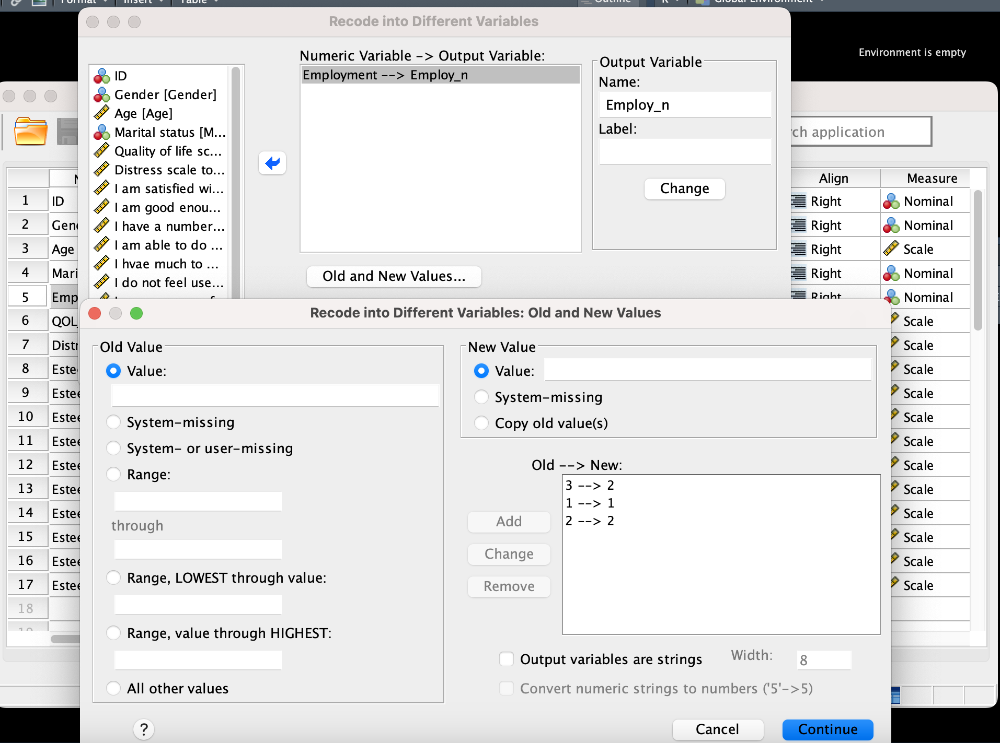
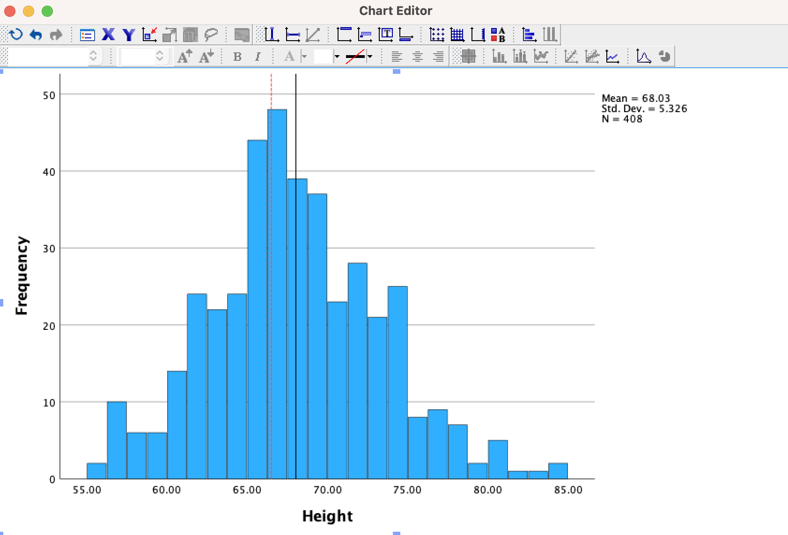
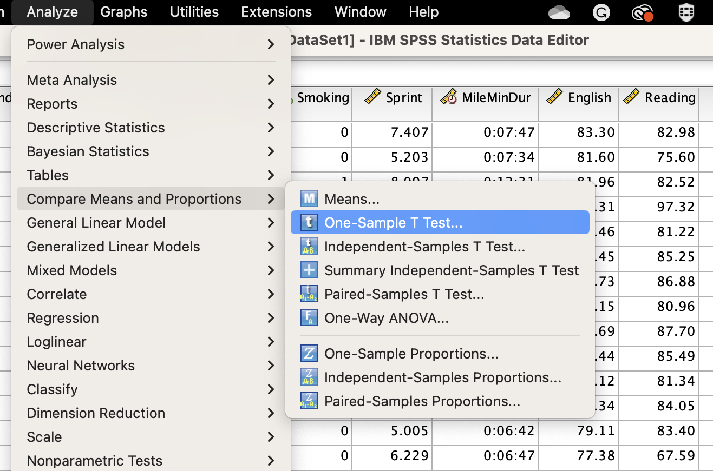
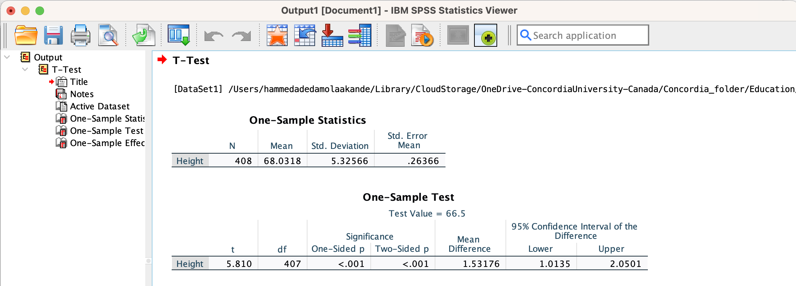
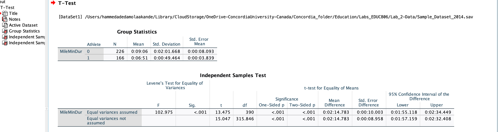
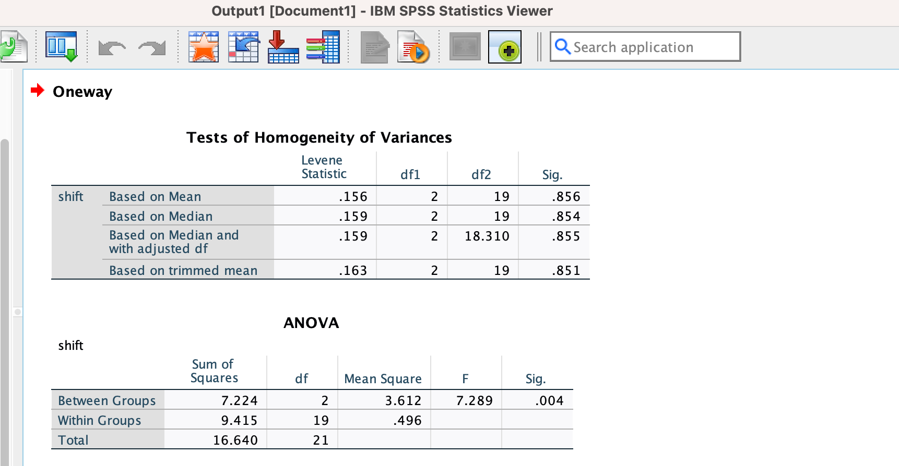
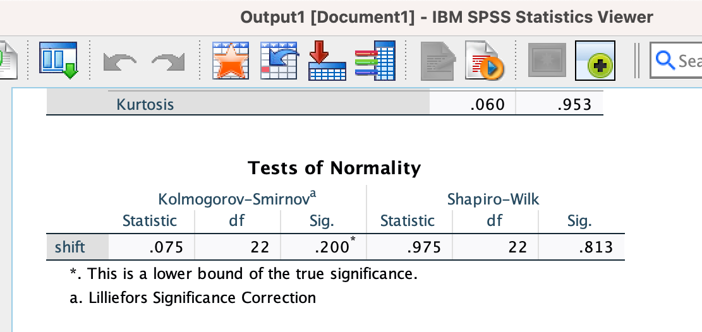
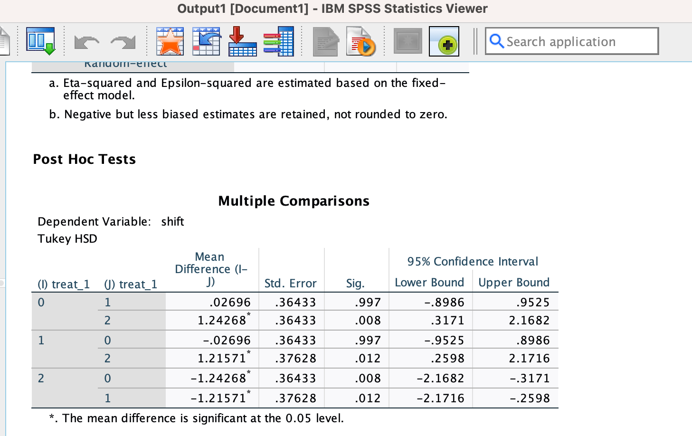

#H0: there is no mean difference in the observation under consideration
#HA: there is a significant difference. EDUC_806- Quantitative Research Methods
Chapter 1- Introduction to SPSS for Quantitative Research
Welcome to the lab section of EDUC 806. This section will focus (primarily) on demonstrating how to use “SPSS” for statistical analysis. This website will be updated as the course progresses. I’m passionate about open science and reproducibility- so my goal is to make this website readily available for anyone and methods covered reproducible as much as possible. As such, all the links to download any open data will be embedded in the website (so you can just click it and download as needed).
Learning Objectives for this Chapter
For this lab, we will get familiar with the SPSS software layout, and do basic descriptive statistics of some sample data to make sense of it. Specifically, we will be doing the following:
Opening SPSS and the SPSS layout- become familiar with the SPSS environment
Learn how to prepare and manage data in SPSS- reviewing data view and the Variable View tab
Learn how to perform descriptive statistics using SPSS- opening a sample data and producing different graphs
Software for Statistical Analysis
There are several software available for statistical analysis. For this course, we will be using SPSS throughout the semester. However, anyone interested in using R (or Python) should feel free to do so (and I’m happy to chat about that). If you’re generally interested in using R for statistical analysis and would like a quick intro, please refer to this website R Workshop for Statistical Analysis.
R
SPSSPython
STATA
SAS
Julia
| SPSS | STATA | SAS | R/R-Studio | Python | Julia | |
|---|---|---|---|---|---|---|
| Price | Free trial (paid subscription/license) | Free trial (paid subscription/license) | Free trial (paid subscription/license) | FREE, Open-Source (non-commercial) | FREE, Open-Source | Open-Source |
| Interface | Click, Drag and Drop + Syntax | Drag and Drop, Scripts, User-friendly | User-friendly | User-friendly | User-friendly | User-friendly |
| Data Visualization | Basic plots, charts, graphs | Plots, charts, graphs | Simple and complex plots | Plots, Graphs- simple, complex- GGplot | Plots, Graphs | Plots, Graphs |
| Statistical models | A lot of statistical models | Very good | Very good | Common and complex (including integration of STAN for Bayesian Analysis) | Common and Complex (including running different ML algorithms) | Common and complex- also very fast |
| Help forum | Google, Stack overflow | Google, Stack Overflow | Google, Stack Overflow | Google, Stack Overflow, Github | Google, Stack Overflow, Github | Google, Stack Overflow, Github |
SPSS Interface
Technically, SPSS interface is composed of 3 main windows:
- Data Editor

- Output

- Syntax

Data Import/Entry and Preparation in SPSS
There are a couple different ways to load in data in SPSS.
- Directly enter the data in the “data” view of SPSS. Variable name in columns and observations in rows and values in between. However, this can be time consuming especially when working with large dataset or if you already have them in different file formats (e.g. csv).
- Click on the “File” menu of SPSS, scroll down to “import’ and select the file format you’d like to choose.
- If you have the data saved somewhere, or want to open data in “SPSS .sav format”, you can click on “File”, select the “Open”, and then “Data.”
Once you’ve loaded the data, the next thing is to check the information of variables. This can be achieved by clicking on the “variable view” beside the “data view” (in the main SPSS window). Technically, the data view shows the full data you just loaded and the variable view represents the additional (important) information of the loaded data. On this variable view screen, you can give the name to the variable and define properties. For example, you can decide to code the “missing data” as “999” here, set the “measure” as (nominal, ordinal, or scale), code categorical data as 0 and 1 (as needed), etc.
Data Management
In SPSS, you can process and make modifications to your raw data, including changing string to numeric data, computing a new variable, and merging multiple categories among others.
There are two important functions that can be used for data management in SPSS.
Transform & Recode function - this can be used to recode data into different variables.

Compute Function- to compute a new summary variable. To do this, click on “transform”, then “compute variable’.
Descriptive Statistics
Descriptive statistics provide a description, summary and show meaningful patterns in data using measure of central tendency and measure of dispersion (spread). The measure of central tendency include mean, median, mode and measure of dispersion include, standard deviation, variance, range, minimum and maximum statistic (which describe how the data is dispersed/spread).
Note- we may not use range and min/max at the same time, same way we may not use Variance at the same time we use SD. This is because one is derivative of other. Put simply,
Range = max - min
Standard Deviation = \(\sqrt{variance}\)
Importance of Descriptive Statistics,
- Data exploration
- Give general sample description
- See if data are loaded correctly
As part of descriptive stat, it is equally important to examine the distribution of data - that is whether the data is normally (or not) distributed. This can be checked by plotting the data and or through a calculation of skewness and kurtosis.
In SPSS, there are two ways to perform descriptive stat- frequencies and descriptive (which usually produces the same result).
Let’s see how it’s done in SPSS.
For the purpose of this lab, we shall be using this example data which can be downloaded here. This dataset contains demographic information of random participants and the quality of life. No identity is revealed and the data can be freely used.
Suppose we’re interested in calculating the measures of central tendency (mean, median, and mode) as well as dispersion/spread (standard deviation, variance, and range). First, download the dataset in the link above (“Example_data_Lab1.sav or xlsx). Load the downloaded data into the SPSS spreadsheet (you’d see something like below):

Now, let’s calculate descriptive statistics,
From the default view, go to the top menu and selecta Analyze, then Descriptive Statistics and then Frequencies:
A new window will pop up and ask you to specify for which variables you’d like to calculate descriptive statistics. Use the arrow to move the Age variable from the left-hand to the right-hand field (as seen here).

Now, click the Statistics button. This will open a new window containing a list of statistics. Select mean. median. mode, range and standard deviation (of course, you can select as many as you want to be calculated). Also, select skewness and kurtosis (to check normality assumption).
Click Continue, and then OK. SPSS will produce the output table(s) containing the descriptive statistics we have chosen. If you calculate the frequency table, it will also include a frequency table–a list of all the possible values in the data set and their corresponding frequencies.
Task one
Remember I said there are two ways to perform descriptive statistics in SPSS. I have shown the “frequencies” route. Now, perform descriptive statistics using the “descriptives” route. (hint- follow the same description above but instead of choosing the frequencies, select descriptives and do the same thing again).
Descriptive Statistics and Histograms
Here, we will continue with our measure of central tendency and dispersion as in the example above, but with the addition of a histogram to viisualize the distribution of our data (in relation to the chosen descriptive statistics).
Imagine we wanted to know about quality of life across our respondents in the questionnaire, we can achieve this by calculating descriptive statistics, as well as plotting a histogram to examine the distribution of the data. Good thing is that SPSS has neat ways to plot data while calculating different measure of central tendency or dispersion. For instance, we can expand the example above by add the “histogram” plot to the output without using the graphs menu in SPSS (much easier)! Using the same dataset as above, we can calculate the descriptive statistics of quality of life.
Like we did the other time, navigate to Analyze, then Descriptive Statistics, and then Frequencies. Select and drag the “quality of life”, and then move it into the field (“variable”) on the right using the arrow.
Like in the last example, click the Statistics button and choose your measures of central tendency (mean, median, mode) and dispersion/spread (range, standard deviation, variance).
Click continue, then we are back to the other window. Now before you proceed, ask SPSS to insert a histogram by clicking on the Charts button, then “histogram” (and check off Show normal curve on histogram):
Finally, you can click continue, and then OK.
With this, SPSS will generate a table of the chosen descriptive statistics, and a histogram showing the distribution of quality of life with a superimposed normal distribution (for comparison):

From this result, we can easily see pattern of the data. The data contains minimum value of 3 and maximum of 20. The mean quality of life (QOL) is 11.45. Thus, we can say the central tendency of this distribution seems to be a good representation as the mean value is not so far from minimum and maximum value. It is however necessary to be sure the data doesn’t contain outliers as mean statistic is sensitive to outliers. In other words, to have good representation (average) in frequency distribution, your data must be controlled from outliers. Median (middle term in a data arranged in order of magnitude) is another commonly used statistic that is less affected by outliers and skewed data. From the result above, the median QOL is 11.50. This value is close to the mean which denote a possiblity of symmetrical distribution. It is also worth noting that median is mostly applicable to ordinal data set and skewed scale variable and may not be a reliable measure of central position if otherwise. Mode is the most frequent score in a data set and often the highest bar in histogram. From the result above, the quality of life with highest frequency is 15. However, mode may not also be a reliable measure of central position of this data as its applicable to categorical or nominal data set. Looking at the table, we can see that the values of mean, median and mode are very close and implies that the distribution is (almost) symmetrical.
Standard deviation (SD) measures the spread of the data. The larger the value of SD, the more spread out the observations are. The SD of QOL is 4.394- which implies the QOL measurements are spread out relatively far from their mean position. Skewness represent how a variable is normally distributed around the mean position. Skeweness of 0 = normal (symmetrical) distribution. Value of skewenss close to 0 = near symmetrical. Less than 0 = negative skeweness. greater than 0 = positive skeweness. Looking at the table, the skewenss of QOL = 0.030 (skewness close to 0- near symmetrical). We can also check the histogram to confirm this. Note that, If the plot was perfectly symmetrical, the value of mean, median and mode should be exactly same thing.
Lastly, Kurtosis measures the heaviness of the tail of distribution. A normal distribution = 0 kurtosis. Kurtosis is positive if the tails are heavier than for a normal distribution and negative if lighter. From the result above, kurtosis = -0.845 for QOL (which indicates a nearly normally distribution since they’re close to 0). However, since Kurtosis is negative here, it means that there are less data distribution at the tails- which means the data are centered around the mean position.
Plot Edits/Customization
Assuming you want to modify the scale of the plot output, you should double-click on the plot in the output window. Then, a Chart Editor should pop up:

Next is to hover your mouse over one of the values on the x-axis, and click one any. All of the x-axis values will become highlighted:
From there, double click on the x-axis and a properties window should pop up:

From there, you can click on the “scale”, modify and apply it. Close the box and your adjustment will be reflected on the main plot.
Practice Questions
Using the world happiness report data set, perform a descriptive statistics of Healthy life expectancy at birth. You can download the data here. The descriptive statistics should include measures of central tendency and dispersion/spread.
Plot histograms of Healthy life expectancy at birth . Looking at the mean, median, and mode, what do they indicate about the shape of the distribution? Can you verify that by looking at the histogram? How does the shape of this distribution compare to the normal (Gaussian) distribution superimposed over it?
Chapter 2- T-test and Analysis of Variance
Mean Confidence
Last week, we examined (among other things) the mean, median, mode and standard deviation. Also, we mentioned how the mean was representative of the data we looked at. Recall, the mean is about central tendency (where you have most of the data under the curve) and the standard deviation is about the variance.
Now (with respect to last week example), imagine I only told you that the sample mean = 11.44 (and no other information about the estimates/data). The next question here should be how “confident” we are that most of the number will be close to “11.44”. Specifically, one would be curious about the sample variation and how different they are from the sample mean (11.44). This implies that the mean alone doesn’t tell the full story about how well it represent the data. It could be either representative of the sample (assuming standard deviation is small) or non-representative (if standard deviation is large). So, in order to be “confident” about how well mean represent the data, one need to know the standard deviation.
How can we relate the mean and the standard deviation together, to give us a new number that tells us about the mean confidence?
Thus, one could say the
\[ confidence = \dfrac {mean} {standard \hspace1ex deviation} \]
The lower the standard deviation, the more confident we would be in the mean representation (because the value of confidence will be big). This confidence is very useful in the sense that it tells us about the ratio between what we think about our sample (the mean), and the variability in our sample (the standard deviation). In fact, this is the basic formula for the t-test!
\[ t = \dfrac {measure \hspace1ex of \hspace1ex effect} {measure \hspace1ex of \hspace1ex error} \]
T-test
Generally, t-test is used to compare the differences in mean scores of (continuous) normally distributed data and used in hypothesis testing. Basically, you’d have to set a null (\(H_o\)) hypothesis and alternate (\(H_a\))) hypothesis.
\(H_o\) = no effective difference between the observed sample mean & the (hypothesized) population mean— simply put, difference in group means is zero and any measured difference is due only to “chance”.
\(H_a\) = difference in group means is different from zero (i.e. there are differences between the observed sample mean and the population mean).
A student t-test can be either one or two-sided (also termed two-tailed). A one-sided test shows whether the observed mean is smaller or larger than the population mean and two-tailed t-test imply that the means are not equivalent. Also, the “t” test statistic is then calculated. Simply put, you reject the null hypothesis of your t-test if the observed t-statistic is more extreme than the critical value determined by the appropriate reference distribution. Where the appropriate reference distribution for the t-statistic is the t distribution. The critical value depends on the significance level of the test (the probability of erroneously rejecting the null hypothesis).
One-sample t-test
This is used to estimate the probability that your sample came from a specific population. Specifically, one sample t-test can be used to determine whether your sample mean, could have come from a paricular population having a specific mean. Technically, it uses the population known parameter, like the mean of the population and the standard deviation of the population. However, most times you don't know those parameters of the population! So, you have to estimate them from your sample.
Recall from the formula of t-test we said earlier,
$$ t = {measure 1ex of 1ex error}
$$
So,
\[ t = \dfrac {mean \hspace1ex difference} {standard \hspace1ex error \hspace1ex of \hspace1ex mean} \]
Where the \[ Mean \hspace1ex difference = sample \hspace1ex mean - population \hspace1ex mean \]
Some points/assumptions here.
Continuous data.
data should be a random sample and come from a
normal population (normal distribution)
Independent (values are not related to one another).
No outliers.
homoscedastic- homogeneity of variance
Meaning of this “t”
Put simply, t only tells us about the level of confidence in our data and nothing more. It is a property of the data and calculated by dividing the mean difference with the standard error of the sample.
\[ Standard \hspace1ex error \hspace1ex of \hspace1ex Mean = \dfrac {standard \hspace1ex deviation} {N} \]
Take for example, your sample mean is 10 and you want to know if it came from a population also with mean of 10. Apparently, In this case, your t would be zero (10-10). This means there’s no difference between your sample mean and population mean. Now, imagine you resample and your mean is now 12 (because the sample mean may not necessarily be the same every time you sample), the value of t would clearly be 2 (12-10 = 2). However,it is also worth noting that the direction of the sign will depend on the estimated standard error. Which means, If the standard error of the sample is positive, then t could be positive (and negative if otherwise). So, if the standard error is smaller, the t gets bigger and thus, we could be more confident in the mean difference.
Now, let’s practice this using data
One-Sample t-test in SPSS
The link to download the data for this example can be found here.
It has been reported that the mean height of U.S. adults of age >= 20 is about 66.5 inches (63.8 for females and 69.3 for males)- reported by CDC. In this example data, we have a sample of over 400 college students from a college. We are interested in testing if the mean height of students at this particular college is significantly different than 66.5 inches (using a one-sample t test).
To start this, we need to state the null and alternative hypotheses:
\(H_o\) = the mean height of students in this college = 66.5
\(H_a\) = the mean height of students in this college is not equal to 66.5
But before we move on, it maybe good to do a quick Exploratory Data Analysis (EDA)
For this example, we will use the Height variable (a continuous variable representing each respondent's height in inches). The heights shows a range of values from 55.00 to 84.41 (click on Analyze > Descriptive Statistics > Descriptives- check the min and max value to see that).
Also, let’s create a histogram of the data so we can get an idea of the distribution, and to see if our hypothesized mean (test value) is near our sample mean. To do this, you can click Graphs > Histogram. Move variable Height to the Variable dialog box, then click OK.

From the plot, we can see that height is relatively symmetrically distributed about the mean (although there is a slightly long tail towards the right). The reference lines indicate that sample mean is slightly greater than the hypothesized mean (but not so much). This is a clue that the result of t-test may be significant, but let’s run it and see.
To do this in SPSS, you can click on Analyze > Compare Means > One-Sample T Test. Move the variable Height to the Test Variable(s) area.

Ideally, the One-Sample T Test window should open and you can specify the variables to be used in the analysis. Like last week example (if you look at the left), all of the variables in your dataset will appear in the list on the left side. You can the drag variables of interest to the Test Variable(s) area by selecting them in the list and click the move arrow button. In the Test Value field, enter 66.5.

Test Variable(s): The variable you want to compare its mean to the test value (hypothesized population mean). You can also run multiple One Sample t Tests simultaneously if you select more than one test variable. Each variable will be compared to the same Test Value.
Test Value: The (hypothesized) population mean against which you will compare your test variable(s).
Estimate effect sizes: This is optional but If checked, it will print effect size statistics -- specifically, the Cohen’s d -- for the test(s). (Note: If you do not see this option in your own SPSS, it might be that you’re using the old version of SPSS).
Lastly, if you click on Options,it will open a window where you can specify the Confidence Interval Percentage and how the test should treat Missing Values (i.e., Exclude cases analysis by analysis or Exclude cases listwise). Click Continue.
Once you’re done, you can click OK to run the One Sample t Test.
See below for the output:

Two sections appear in the one-sample t-test output: One-Sample Statistics and One-Sample Test. The first section, One-Sample Statistics, provides general information about the “Height”- including the valid (nonmissing) sample size (n- 408), mean (68.0 3inches), standard deviation, and standard error.
The second section, One-Sample Test, displays the results most relevant to the One Sample t Test.
- Test Value: The same number we entered as the test value above.
- t Statistic: The “t” test statistic of the one-sample t test. From the result above, we can see that t = 5.810. Recall, like we described above, t is calculated by dividing the mean difference by the standard error of the sample.
- Mean Difference: This represent the difference between the “observed” sample mean and the “expected” mean (test value). The sign of the mean difference corresponds to the sign of the t value. The positive t value (in this case) denotes that the mean height of the sample is > than the test (hypothesized) value (66.5).
- df: The degrees of freedom. For a one-sample t test, df = n - 1; so here, df = 408 - 1 = 407.
- Significance (One-Sided p and Two-Sided p): The p-values of the possible one-sided alternative hypotheses (mean height > 66.5) and two-sided alternative hypothesis (mean height ≠ 66.5), respectively. We were only interested in the two-sided alternative hypothesis, based on our hypothesis.
- Confidence Interval for the Difference: The confidence interval for the difference between the our chosen test value and the sample mean.
Interpretation
Recall from our hypothesis above, the test value was 66.5 inches (which represent the average adult height in the U.S). However, from our result, since p < 0.001 (significant across all conventional levels of significance), we have evidence to reject the null hypothesis that the mean height of students in that particular college is 66.5. Thus, we can conclude that the mean height of students in that college is significantly different than 66.5 inches.
In other words, we can say:
There is a significant difference in the mean height of the students in that college and the overall adult population in the U.S. (p < .001).
and
The average students height of this college is about 1.53 inches taller than the average U.S. adult population (95% CI [1.013, 2.050]).
Two Sample t-Test (Independent Sample)
In independent sample (two sample t-Test), there is a single factor (explanatory) variable with two levels which split the subjects into two groups. Often, one level is considered the control, while the other is the treatment. Then, the subjects will be randomly assigned to one of the two groups. Following the assignment to a group, each subject has some quantity measured- tagged the response (dependent/outcome) variable.
Recall that this model makes assumption- normality, homogeneity of variance and independence. It is also important to note that, if the assumption is not met, an equivalent non-parametric test would be appropiate (e.g.- Mann-Whitney test or Wilcoxon test).
The question here is: are there differences between the two groups? Specifically, the question we want to ask is: are the means of the two groups different or the same?
In other words,
\[ H_0 = \mu_1 = \mu_2 \hspace 2ex or \hspace3ex H_a = \mu_1 \neq \mu_2 \]
As such, for this stated model (and assuming the \[H_0\] is true), then the t test statistic should follow a t distribution with degrees of freedom \[ n_1 \hspace1ex + n_2 \hspace1ex -2\].
Example 2-
In our sample dataset, students reported their normal time to run a mile, and whether (or not) they were an athlete. Now, we would like to know if the average time to run a mile is different for athletes versus non-athletes. This involves testing whether the sample means for mile time among athletes and non-athletes are statistically different (and by extension, inferring whether the means for mile times in the population are significantly different between these two groups).
For this problem, we can use a two-sample (Independent Samples) t Test to compare the mean mile time for athletes and non-athletes.
\(H_o\) : the mean of non-athlete - mean of athlete = 0
\(H_a\) = the mean of non-athlete - mean of athlete \[\neq\] 0
Do it in SPSS.
For this, we will use two variables: Athlete and MileMinDur. The variable Athlete has values of either "0" (non-athlete) or “1” (athlete). It will function as the independent variable in this T test. The variable MileMinDur is a numeric duration variable (h:mm:ss), and it will function as the dependent variable.
To do it in SPSS, click Analyze > Compare Means > Independent-Samples T Test.
The Independent-Samples (two sample) t-Test window opens where you can specify the variables to be used in the analysis. All of the variables will appear here on the left side. Like the othe time, you can move variables to the right by selecting them and clicking the blue arrow buttons. You can move a variable(s) to either of two areas: Grouping Variable or Test Variable(s).
The:
Test Variable(s)= response/dependent variable(s). This is the continuous variable whose means we want to compare between the two groups. You can also run multiple t tests simultaneously by selecting more than one test variable.
Grouping Variable = explanatory/ independent variable. The categories (or groups) of the independent variable will define which samples will be compared in the t test. This must have at least two categories (groups). Although this may have more than two categories, a t test can only compare two groups, so you will need to specify which two groups to compare (if it’s more than two, then you look at multi-factorial ANOVA, for example). You can also use a continuous variable by specifying a cut point to create two groups (i.e., values at or above the cut point and values below the cut point).
Define Groups: Click Define Groups to define the category indicators (groups) to use in the t test. If the button is not active, make sure that you have already moved your independent variable to the right in the Grouping Variable field. You must define the categories of your grouping variable before you can run the Independent Samples t Test procedure.
Options: The Options section is where you can set your confidence level for the confidence interval for the mean difference, and specify how SPSS should handle missing values.
Once you’re done, click OK to run the Independent Samples t Test, or click Paste to have the syntax corresponding to your specified settings written to an open syntax window. (If you do not have a syntax window open, a new window will pop up).
Result

Again, two sections appear in the output:
1) Group Statistics which provide basic information about our comparisons- such as the sample size, mean, sd and standard error for mile times by group. From the result, we can see that there are 166 athletes and 226 non-athletes. The mean mile time for athletes is 6 minutes 51 seconds, and the mean mile time for non-athletes is 9 minutes 6 seconds.
2) Independent Samples Test displays the results most relevant to the two-Samples t Test. There are two parts that provide different pieces of information:
Levene's Test for Equality of Variances - F is the test statistic of Levene’s test and Sig. is the p-value corresponding to this test statistic. From the result, we can see the p-value is so low. So, we have evidence to reject the null hypothesis. So, we can conclude that the variance in mile time of athletes is significantly different than that of non-athletes variance. This imply that, we should observe the the “Equal variances not assumed” row for the t test (and corresponding confidence interval) results.
t-test for Equality of Means- provides the results for the actual Independent Samples t Test.
Interpretation
Given that p < .001 is less than significance level of α = 0.05 (our preferred level), we have evidence to reject the null hypothesis, and conclude that the that the mean mile time for athletes and non-athletes is significantly different.
Therefore, we can say that:
There was a significant difference in mean mile time between non-athletes and athletes ( \[t_{315.846}\] = 15.047, p < .001).
The average mile time for athletes was 2 minutes and 14 seconds lower than the average mile time for non-athletes.
## Analysis of Variance (ANOVA)
One-Way ANOVA
ANOVA is a parametric test and simply an extension of two-samples t-test. By Parametric, I mean it make assumptions regarding the shape of the population. Such assumption includes normal distribution in each factor level, commonly refers to as a “bell-shaped” curve, homogeneity (equal variance) and that the observations are independent. Basically, in your research or more broadly, statistics, you often hear or conduct one or two way ANOVA. What this means is about the factor in question (the number of predictors/explanatory/independent variables). In one-way ANOVA,you only have one independent (factor) variable and in a two-way ANOVA, you have two. We shall see examples below.
Like t-test, when conducting ANOVA, we need to set up hypothesis. Basically, you have either \[H_0\] (null) or \[H_a\] (Alternate hypothesis). Usually, your \[H_0\] implies there is no difference in the mean of your groups. Simply put, your observations comes from populations with the same variance (homoscedastic). \[H_a\] on the other hand states there is a difference (heteroscedastic).
To test for this assumption of homoscedasticity, we can use the Levene’s test (see below). N.B: if your \[H_0\] is rejected, you should not proceed with the standard ANOVA test- perhaps consider the equivalent non-parametric test (e.g., Kruskal-Wallis test).
Ideally, you should state this out explicitly, such as below:
Let’s quickly demonstrate this with data
We shall be using the Circadian data. So, let’s load the data.
For quick context, the data is about jet lag and adjusting to a different time zone. Campbell and Murphy (1998) claimed people adjust to their new time zone once the light reset their internal, circadian clock. Wright and Czeisler 2002 revisited this study and measured the circadian rhythm of melatonin production. They subjected 22 people to random treatments; control, knees only and eyes. Please read more on this paper online or attached pdf (Wright and Czeisler 2002).
So for our analysis, we want to compare phase shifts in the circadian rhytm of melatonin productions in participants given another light treatments.
Note- ANOVA is a linear regression BUT the predictor variables are categorical instead of being continuous. Also, rather than estimating the slope (in the case of regression), with ANOVA you obtain an estimate of the response variable for each independent variable category.
Now, let’s do this in SPSS
Click Analyze > Compare Means > One-Way ANOVA.
Add the variable Shift to the Dependent List box, and add the variable treatment to the Factor box.
Click Options. Check the box for Homogeneity of Variance, then click Continue.
Click OK when finished.
Output for the analysis will display in the Output Viewer window.

From the levene test, we can see that the P value is > 0.05 (0.85), there is no evidence to reject the H0 (they have the same variance). So, we can proceed with ANOVANormality test
From the Shapiro normality test, the P-value = 0.813, which is greater than the chosen P-value (0.05) and therefore, we have strong evidence to conclude that this data comes from a normal population, as such normality assumption is met.

Lastly,
Since the ANOVA test is significant, you may want to compute the Tukey test to check for pairwise-comparison between the means of groups

You can see that both eyes-control and knee-eyes are both significant (check the p-value)
diff lwr upr p adj
## eyes-control -1.24267857 -2.1682364 -0.3171207 0.0078656
## knee-control -0.02696429 -0.9525222 0.8985936 0.9969851
## knee-eyes 1.21571429 0.2598022 2.1716263 0.0116776Which test should I use for my data?